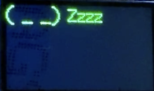

The motivation behind this project was to subvert the stereotypical desire for love and affection on Valentines Day. Instead of sending a card to spread love, I decided to send a card to remind people that romance is hard and to put loving their well-being first. As such, this “anti”-Valentine's card TTGO display came about. I also made it so that after the text story is done, the device will go to sleep for a while to really hit home the point of focusing on sleep. I, as a CS major, am well aware of the horrible sleep habits myself and many of those around me indulge in. So, in my sleep-deprived ridden state, I decided to have both words and actions of my art try to convince anyone watching to take the first step towards a healthy lifestyle. This attribute mainly came about due to battery life concerns, but I decided to incorporate a timed screen-off section into the artistic vision.
To start off, I just created this text image using an online source for keyboard text emojis that looked sleepy and made sure that I could get it to appear on the screen.
After this, I wanted to make a cute story relating to Valentine’s, which somehow evolved to a bit of an anti-Valentine’s message and a PSA to get more sleep. To add more some aspects of randomness, I started by incorporating a random function within the point where the boy runs away so that he’d be placed in random places along the screen until he finally leaves the screen.
The first draft with my artistic story vision. Has a failed love story with a boy running from a confession and a PSA to sleep afterwards. All positions are hard-coded at this point.
A fixed version with a more refined randomized "running" visual of the boy that adds in a display of the ESP32's computational power.
After this, I also wanted to implement another random function where phrases and emojis would appear at random locations on the screen and would be randomly chosen from an array of options. A text color is also randomly chosen per function call.
First attempt:
Final Attempt: